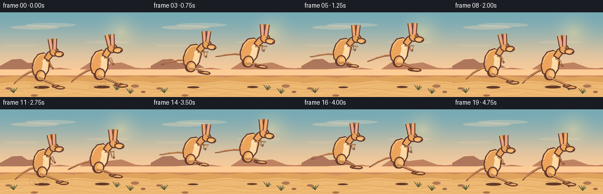
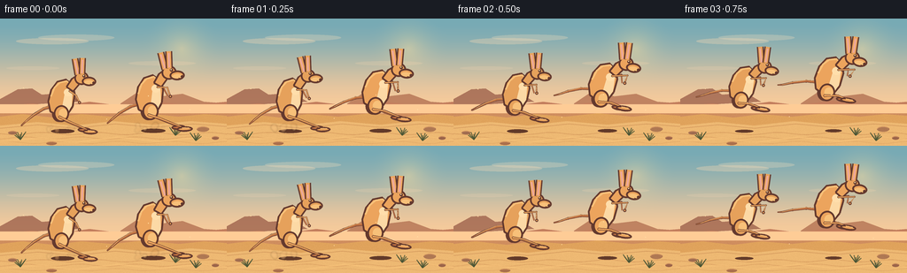
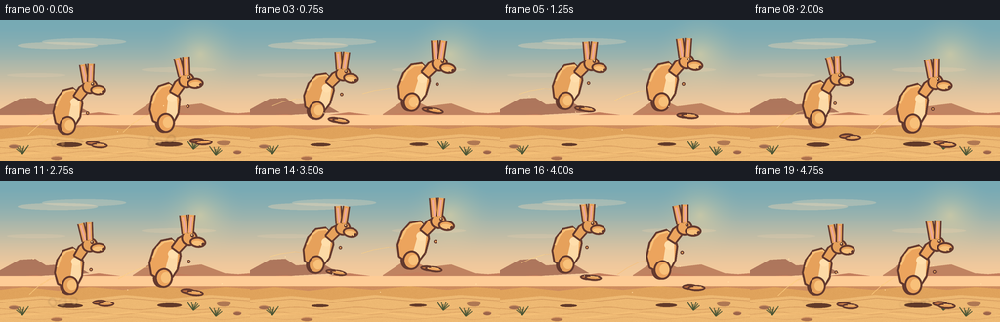
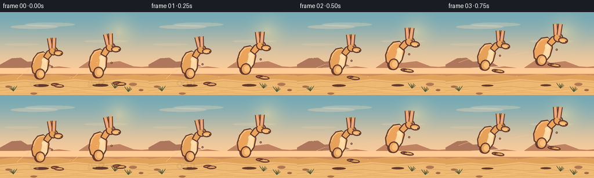
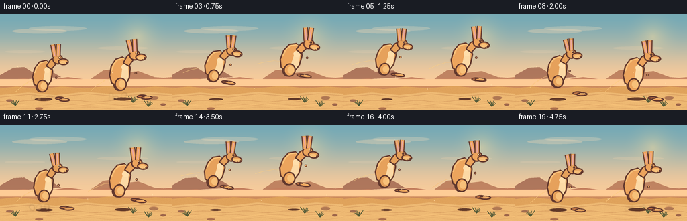
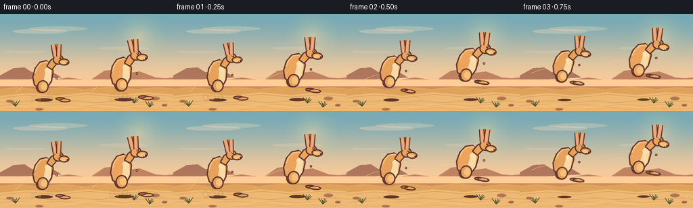

CODING AGENTS AS PIXEL WORLD MODELS
traex/DeepSeek-V4.1-Flash · instance_preservation_0008
点击播放 · 原生 RGB 像素
逐轮保存的候选
回放视频、检查图与代码变化。
每份候选均可单独播放。实际图片检查记录在下方工具轨迹中。
候选 01播放与检查图
点击播放 · 原生 RGB 像素


展开代码变化
--- 上一保存版本
+++ 本次保存版本
@@ -0,0 +1,489 @@
+from __future__ import annotations
+
+import math
+from pathlib import Path
+
+import numpy as np
+from PIL import Image, ImageDraw, ImageFilter
+
+from artifact_io import save
+
+
+CASE_DIR = Path(__file__).resolve().parent
+WIDTH = 256
+HEIGHT = 144
+FRAMES = 20
+FPS = 4
+SS = 4
+SCALE_W = WIDTH * SS
+SCALE_H = HEIGHT * SS
+
+
+def rgb(hex_value: str) -> tuple[int, int, int]:
+ value = hex_value.lstrip("#")
+ return tuple(int(value[index:index + 2], 16) for index in (0, 2, 4))
+
+
+SKY_TOP = rgb("#73a9b8")
+SKY_HORIZON = rgb("#efc99e")
+SUN = rgb("#ffe3a1")
+FAR_DUNE = rgb("#bd7d5f")
+MID_DUNE = rgb("#c98d61")
+GROUND = rgb("#d9a25e")
+GROUND_LIGHT = rgb("#e7b875")
+GROUND_SHADE = rgb("#b97c4c")
+SAND = rgb("#dfa05d")
+SAND_LIGHT = rgb("#f0bf7b")
+SAND_SHADE = rgb("#bd7748")
+CREAM = rgb("#f4d7a8")
+OUTLINE = rgb("#5f382f")
+EAR_INNER = rgb("#e6a8a0")
+OLIVE = rgb("#5f7356")
+OLIVE_LIGHT = rgb("#8a9964")
+
+
+def lerp_color(a: tuple[int, int, int], b: tuple[int, int, int], t: float) -> tuple[int, int, int]:
+ return tuple(round(a[index] * (1.0 - t) + b[index] * t) for index in range(3))
+
+
+def make_background() -> Image.Image:
+ """Render a warm desert with enough structure to give the hop depth."""
+ y = np.linspace(0.0, 1.0, SCALE_H, dtype=np.float32)[:, None]
+ bend = np.clip(y / 0.70, 0.0, 1.0)
+ bend = bend * bend * (3.0 - 2.0 * bend)
+ top = np.array(SKY_TOP, dtype=np.float32)
+ horizon = np.array(SKY_HORIZON, dtype=np.float32)
+ pixels = top[None, None, :] * (1.0 - bend[:, :, None]) + horizon[None, None, :] * bend[:, :, None]
+ pixels = np.repeat(pixels, SCALE_W, axis=1)
+
+ yy, xx = np.mgrid[0:SCALE_H, 0:SCALE_W]
+ sun_x, sun_y = 205 * SS, 34 * SS
+ distance = np.sqrt((xx - sun_x) ** 2 + (yy - sun_y) ** 2)
+ glow = np.clip(1.0 - distance / (48 * SS), 0.0, 1.0) ** 2
+ pixels = pixels * (1.0 - glow[:, :, None] * 0.40) + np.array(SUN, dtype=np.float32)[None, None, :] * glow[:, :, None] * 0.40
+
+ image = Image.fromarray(np.clip(pixels, 0, 255).astype(np.uint8), "RGB")
+ draw = ImageDraw.Draw(image, "RGBA")
+
+ # Thin, quiet cloud bands keep the sky warm without competing with the animals.
+ cloud_color = (249, 219, 181, 80)
+ draw.ellipse((18 * SS, 22 * SS, 100 * SS, 29 * SS), fill=cloud_color)
+ draw.ellipse((43 * SS, 18 * SS, 129 * SS, 25 * SS), fill=(250, 225, 192, 65))
+ draw.ellipse((145 * SS, 48 * SS, 221 * SS, 53 * SS), fill=(248, 215, 177, 48))
+ draw.ellipse((7 * SS, 54 * SS, 67 * SS, 58 * SS), fill=(248, 218, 184, 42))
+
+ # Distant mesas and three dune bands create readable depth.
+ draw.polygon(
+ [
+ (0, 91 * SS), (20 * SS, 80 * SS), (36 * SS, 79 * SS), (47 * SS, 86 * SS),
+ (74 * SS, 84 * SS), (91 * SS, 94 * SS), (0, 99 * SS),
+ ],
+ fill=(154, 100, 80, 210),
+ )
+ draw.polygon(
+ [
+ (136 * SS, 96 * SS), (154 * SS, 84 * SS), (169 * SS, 82 * SS),
+ (181 * SS, 88 * SS), (206 * SS, 85 * SS), (230 * SS, 94 * SS),
+ (256 * SS, 96 * SS), (256 * SS, 103 * SS), (136 * SS, 103 * SS),
+ ],
+ fill=(172, 111, 83, 200),
+ )
+ draw.polygon(
+ [
+ (0, 99 * SS), (36 * SS, 96 * SS), (65 * SS, 99 * SS), (101 * SS, 94 * SS),
+ (132 * SS, 98 * SS), (171 * SS, 93 * SS), (211 * SS, 98 * SS),
+ (256 * SS, 94 * SS), (256 * SS, 111 * SS), (0, 111 * SS),
+ ],
+ fill=FAR_DUNE,
+ )
+ draw.polygon(
+ [
+ (0, 105 * SS), (31 * SS, 101 * SS), (67 * SS, 105 * SS), (108 * SS, 100 * SS),
+ (145 * SS, 104 * SS), (184 * SS, 99 * SS), (221 * SS, 103 * SS),
+ (256 * SS, 100 * SS), (256 * SS, 119 * SS), (0, 119 * SS),
+ ],
+ fill=MID_DUNE,
+ )
+ draw.polygon(
+ [
+ (0, 111 * SS), (25 * SS, 108 * SS), (60 * SS, 112 * SS), (92 * SS, 108 * SS),
+ (126 * SS, 111 * SS), (163 * SS, 107 * SS), (202 * SS, 111 * SS),
+ (231 * SS, 108 * SS), (256 * SS, 110 * SS), (256 * SS, SCALE_H),
+ (0, SCALE_H),
+ ],
+ fill=GROUND,
+ )
+
+ # Warm foreground bands and wind-polished sand ripples.
+ draw.polygon(
+ [
+ (0, 121 * SS), (42 * SS, 117 * SS), (83 * SS, 121 * SS), (128 * SS, 116 * SS),
+ (173 * SS, 120 * SS), (215 * SS, 116 * SS), (256 * SS, 119 * SS),
+ (256 * SS, SCALE_H), (0, SCALE_H),
+ ],
+ fill=GROUND_LIGHT,
+ )
+ draw.line(
+ [(0, 124 * SS), (43 * SS, 120 * SS), (84 * SS, 124 * SS), (130 * SS, 119 * SS),
+ (174 * SS, 123 * SS), (218 * SS, 119 * SS), (256 * SS, 122 * SS)],
+ fill=(173, 112, 68, 100), width=SS,
+ )
+ for offset, alpha in ((0, 75), (5, 55), (10, 38)):
+ points = []
+ for px in range(-20, 280, 5):
+ py = 130 + offset + 1.3 * math.sin(px * 0.10 + offset * 0.4)
+ points.append((px * SS, round(py * SS)))
+ draw.line(points, fill=(169, 105, 62, alpha), width=SS, joint="curve")
+ draw.line(
+ [(0, 139 * SS), (45 * SS, 135 * SS), (86 * SS, 140 * SS), (133 * SS, 134 * SS),
+ (180 * SS, 139 * SS), (225 * SS, 134 * SS), (256 * SS, 137 * SS)],
+ fill=(245, 198, 127, 105), width=2 * SS,
+ )
+
+ # Sparse stones and dry grass frame the action without obscuring it.
+ rocks = [
+ (14, 129, 5, 2, rgb("#9b6b52")),
+ (229, 125, 7, 3, rgb("#a97755")),
+ (243, 135, 4, 2, rgb("#96634c")),
+ (58, 141, 6, 2, rgb("#a46e4e")),
+ ]
+ for x, y, rx, ry, color in rocks:
+ draw.ellipse(((x - rx) * SS, (y - ry) * SS, (x + rx) * SS, (y + ry) * SS), fill=color)
+ draw.arc(
+ ((x - rx) * SS, (y - ry) * SS, (x + rx) * SS, (y + ry) * SS),
+ 185, 330, fill=(230, 172, 111, 150), width=SS,
+ )
+
+ for base_x, base_y, flip in ((23, 137, 1), (221, 138, -1), (198, 132, -1)):
+ for index in range(9):
+ spread = (index - 4) * 1.6
+ tip_x = base_x + spread * flip
+ tip_y = base_y - 4 - (index % 3) * 2 - abs(index - 4) * 0.25
+ draw.line(
+ [(base_x * SS, base_y * SS), (tip_x * SS, tip_y * SS)],
+ fill=(69, 83, 54, 210), width=SS,
+ )
+
+ # Fine grain is applied after the large shapes so the ground feels sandy.
+ array = np.asarray(image).astype(np.int16)
+ rng = np.random.default_rng(17)
+ grain = rng.integers(-5, 6, size=(SCALE_H // 2, SCALE_W // 2), dtype=np.int16)
+ grain = np.repeat(np.repeat(grain, 2, axis=0), 2, axis=1)
+ ground_mask = (yy >= 105 * SS)
+ array[ground_mask] = np.clip(array[ground_mask] + grain[ground_mask, None] * 0.55, 0, 255).astype(np.int16)
+ return Image.fromarray(array.astype(np.uint8), "RGB")
+
+
+def tapered_line(
+ draw: ImageDraw.ImageDraw,
+ points: list[tuple[float, float]],
+ widths: list[float],
+ fill: tuple[int, int, int],
+ outline: tuple[int, int, int] | None = None,
+ outline_extra: float = 2.5,
+ scale: float = 1.0,
+) -> None:
+ """Draw a rounded, tapered polyline in supersampled coordinates."""
+ px = [(x * scale, y * scale) for x, y in points]
+ ws = [w * scale for w in widths]
+
+ def polygon_for(extra: float) -> list[tuple[float, float]]:
+ left: list[tuple[float, float]] = []
+ right: list[tuple[float, float]] = []
+ for index, point in enumerate(px):
+ if index == 0:
+ dx, dy = px[1][0] - point[0], px[1][1] - point[1]
+ elif index == len(px) - 1:
+ dx, dy = point[0] - px[index - 1][0], point[1] - px[index - 1][1]
+ else:
+ dx = px[index + 1][0] - px[index - 1][0]
+ dy = px[index + 1][1] - px[index - 1][1]
+ length = max(math.hypot(dx, dy), 1e-6)
+ nx, ny = -dy / length, dx / length
+ radius = ws[index] * 0.5 + extra
+ left.append((point[0] + nx * radius, point[1] + ny * radius))
+ right.append((point[0] - nx * radius, point[1] - ny * radius))
+ return left + list(reversed(right))
+
+ if outline is not None:
+ outline_poly = polygon_for(outline_extra)
+ draw.polygon(outline_poly, fill=outline)
+ for point, width in zip(px, ws):
+ radius = width * 0.5 + outline_extra
+ draw.ellipse((point[0] - radius, point[1] - radius, point[0] + radius, point[1] + radius), fill=outline)
+ draw.polygon(polygon_for(0.0), fill=fill)
+ for point, width in zip(px, ws):
+ radius = width * 0.5
+ draw.ellipse((point[0] - radius, point[1] - radius, point[0] + radius, point[1] + radius), fill=fill)
+
+
+class Kangaroo:
+ LAYER_W = 124
+ LAYER_H = 116
+ ORIGIN = (62, 110)
+
+ def __init__(self, body_color: tuple[int, int, int], accent: tuple[int, int, int], scale: float = 1.0):
+ self.body_color = body_color
+ self.accent = accent
+ self.scale = scale
+
+ def render(self, pose_index: int, flip: bool = False) -> Image.Image:
+ layer = Image.new("RGBA", (self.LAYER_W * SS, self.LAYER_H * SS), (0, 0, 0, 0))
+ draw = ImageDraw.Draw(layer, "RGBA")
+ ox, oy = self.ORIGIN[0] * SS, self.ORIGIN[1] * SS
+
+ def p(x: float, y: float) -> tuple[float, float]:
+ return ox + x * SS, oy + y * SS
+
+ def box(x0: float, y0: float, x1: float, y1: float) -> tuple[float, float, float, float]:
+ return ox + x0 * SS, oy + y0 * SS, ox + x1 * SS, oy + y1 * SS
+
+ def polygon(points: list[tuple[float, float]], fill: tuple[int, int, int], outline=None, width=2.0) -> None:
+ transformed = [p(x, y) for x, y in points]
+ draw.polygon(transformed, fill=fill)
+ if outline is not None:
+ draw.line(transformed + [transformed[0]], fill=outline, width=round(width * SS), joint="curve")
+
+ poses = [
+ # tail points, near leg, far leg, near arm, far arm, body angle
+ ((-9, -31, -23, -26, -35, -18, -44, -10, -49, -5), (34, -1, 7, -12), (27, -3, 2, -13), (19, -35, 15, -43), (16, -37, 11, -45), -2.0),
+ ((-9, -31, -24, -27, -37, -20, -46, -13, -51, -9), (37, 0, 7, -13), (30, -2, 3, -14), (21, -37, 18, -47), (18, -38, 13, -48), 2.0),
+ ((-9, -31, -25, -28, -38, -22, -48, -16, -53, -13), (32, -9, 9, -16), (25, -10, 5, -16), (22, -40, 21, -50), (19, -40, 15, -50), -5.0),
+ ((-9, -31, -26, -29, -40, -24, -50, -19, -55, -17), (26, -14, 10, -18), (20, -14, 6, -18), (22, -42, 24, -51), (19, -42, 17, -51), -8.0),
+ ((-9, -31, -27, -30, -42, -26, -53, -22, -58, -21), (24, -16, 11, -19), (18, -16, 7, -19), (21, -43, 25, -51), (18, -43, 18, -51), -8.5),
+ ((-9, -31, -27, -30, -42, -26, -53, -22, -58, -21), (23, -15, 10, -19), (17, -15, 6, -19), (20, -43, 24, -50), (17, -43, 17, -50), -7.0),
+ ((-9, -31, -26, -29, -40, -24, -50, -19, -55, -17), (29, -9, 8, -17), (23, -9, 4, -17), (19, -41, 21, -49), (16, -41, 14, -49), -4.0),
+ ((-9, -31, -25, -28, -38, -22, -48, -16, -53, -13), (34, -3, 6, -14), (27, -4, 2, -14), (18, -39, 18, -47), (15, -39, 11, -47), 0.0),
+ ((-9, -31, -24, -27, -37, -20, -46, -13, -51, -9), (36, 0, 6, -13), (29, -2, 2, -14), (17, -37, 15, -45), (14, -38, 10, -46), 2.0),
+ ((-9, -31, -23, -26, -35, -18, -44, -10, -49, -5), (35, 0, 6, -12), (28, -2, 2, -13), (18, -36, 15, -44), (15, -37, 10, -45), -1.0),
+ ]
+ tail, near_leg, far_leg, near_arm, far_arm, _ = poses[pose_index % len(poses)]
+
+ # Tail, far limbs, then torso create a clean side-view silhouette.
+ tapered_line(
+ draw,
+ [p(-8, -31), p(tail[0], tail[1]), p(tail[2], tail[3]), p(tail[4], tail[5]), p(tail[6], tail[7]), p(tail[8], tail[9])],
+ [10.5, 9.5, 7.7, 5.8, 3.4, 1.4],
+ self.accent,
+ OUTLINE,
+ 2.2,
+ )
+ tapered_line(
+ draw,
+ [p(-7, -30), p(tail[0], tail[1] - 1.0), p(tail[2], tail[3] - 1.2), p(tail[4], tail[5] - 0.8), p(tail[6], tail[7])],
+ [2.0, 1.8, 1.5, 1.0, 0.5],
+ SAND_LIGHT,
+ scale=1.0,
+ )
+
+ # Far hind leg is intentionally darker.
+ draw.ellipse(box(-13, -30, 4, -11), fill=self.accent, outline=OUTLINE, width=2 * SS)
+ tapered_line(
+ draw,
+ [p(-5, -17), p(far_leg[2], far_leg[3]), p(far_leg[0], far_leg[1])],
+ [7.5, 5.2, 3.5],
+ self.accent,
+ OUTLINE,
+ 2.0,
+ )
+ draw.ellipse(box(far_leg[0] - 9, far_leg[1] - 2.3, far_leg[0] + 7, far_leg[1] + 3.3), fill=self.accent, outline=OUTLINE, width=2 * SS)
+ tapered_line(
+ draw,
+ [p(7, -48), p(far_arm[2], far_arm[3]), p(far_arm[0], far_arm[1])],
+ [4.8, 3.3, 2.3],
+ self.accent,
+ OUTLINE,
+ 1.8,
+ )
+
+ # Main torso.
+ torso = [
+ (-15, -23), (-18, -35), (-15, -49), (-8, -59), (2, -62),
+ (10, -56), (13, -45), (11, -30), (5, -20), (-5, -18),
+ ]
+ polygon(torso, self.body_color, OUTLINE, 2.1)
+ # Warm rim light along the back.
+ draw.line(
+ [p(-15, -41), p(-11, -52), p(-5, -58), p(3, -60), p(8, -56)],
+ fill=SAND_LIGHT, width=2 * SS, joint="curve",
+ )
+ # Pale chest and belly.
+ polygon(
+ [(5, -51), (10, -45), (10, -31), (6, -23), (0, -22), (-1, -31), (1, -44)],
+ CREAM,
+ width=0,
+ )
+ draw.ellipse(box(0, -51, 10, -42), fill=(248, 220, 174), outline=None)
+
+ # Neck and head.
+ polygon(
+ [(3, -53), (9, -63), (16, -68), (22, -65), (18, -57), (11, -48)],
+ self.body_color,
+ OUTLINE,
+ 2.0,
+ )
+ draw.ellipse(box(12, -72, 29, -56), fill=self.body_color, outline=OUTLINE, width=2 * SS)
+ draw.ellipse(box(21, -66, 38, -55), fill=self.body_color, outline=OUTLINE, width=2 * SS)
+ draw.ellipse(box(24, -62, 35, -57), fill=SAND_LIGHT, outline=None)
+
+ # Long ears with rose-colored interiors.
+ for x0, y0, x1, y1 in ((16, -68, 12, -87), (21, -69, 21, -88)):
+ draw.line([p(x0, y0), p(x1, y1)], fill=OUTLINE, width=8 * SS)
+ draw.line([p(x0, y0), p(x1, y1)], fill=self.body_color, width=5 * SS)
+ draw.line([p(x0 + 0.2, y0 - 1), p(x1 + 0.2, y1 + 2)], fill=EAR_INNER, width=2 * SS)
+
+ # Face details.
+ draw.ellipse(box(21.5, -68.4, 25.0, -64.9), fill=OUTLINE)
+ draw.ellipse(box(22.4, -67.8, 23.7, -66.5), fill=(250, 220, 164))
+ draw.ellipse(box(33.5, -60.4, 36.6, -57.3), fill=OUTLINE)
+ draw.line([p(31, -57.5), p(34, -56.7)], fill=OUTLINE, width=SS)
+
+ # Near hind leg, with a large long foot.
+ draw.ellipse(box(-11, -31, 7, -11), fill=self.body_color, outline=OUTLINE, width=2 * SS)
+ draw.ellipse(box(-5, -27, 5, -16), fill=SAND_LIGHT, outline=None)
+ tapered_line(
+ draw,
+ [p(-4, -17), p(near_leg[2], near_leg[3]), p(near_leg[0], near_leg[1])],
+ [8.0, 5.8, 3.8],
+ self.body_color,
+ OUTLINE,
+ 2.0,
+ )
+ draw.ellipse(box(near_leg[0] - 10, near_leg[1] - 2.5, near_leg[0] + 8, near_leg[1] + 3.6), fill=self.body_color, outline=OUTLINE, width=2 * SS)
+ draw.line(
+ [p(near_leg[0] - 4, near_leg[1] - 1.2), p(near_leg[0] + 4, near_leg[1] - 0.7)],
+ fill=SAND_LIGHT, width=SS,
+ )
+
+ # Near arm.
+ tapered_line(
+ draw,
+ [p(7, -48), p(near_arm[2], near_arm[3]), p(near_arm[0], near_arm[1])],
+ [5.4, 3.8, 2.7],
+ self.body_color,
+ OUTLINE,
+ 1.8,
+ )
+ draw.ellipse(box(near_arm[0] - 1.7, near_arm[1] - 1.6, near_arm[0] + 1.9, near_arm[1] + 1.9), fill=self.body_color, outline=OUTLINE, width=SS)
+
+ angle = poses[pose_index % len(poses)][5]
+ if flip:
+ layer = layer.transpose(Image.Transpose.FLIP_LEFT_RIGHT)
+ angle = -angle
+ layer = layer.rotate(angle, resample=Image.Resampling.BICUBIC, center=(self.ORIGIN[0] * SS, 66 * SS))
+ if self.scale != 1.0:
+ layer = layer.resize(
+ (round(self.LAYER_W * SS * self.scale), round(self.LAYER_H * SS * self.scale)),
+ Image.Resampling.LANCZOS,
+ )
+ return layer
+
+
+def paste_kangaroo(canvas: Image.Image, sprite: Image.Image, x: float, ground_y: float, lift: float, depth_scale: float) -> None:
+ if depth_scale != 1.0:
+ sprite = sprite.resize(
+ (round(sprite.width * depth_scale), round(sprite.height * depth_scale)),
+ Image.Resampling.LANCZOS,
+ )
+ anchor_x = Kangaroo.ORIGIN[0] * SS * depth_scale
+ anchor_y = Kangaroo.ORIGIN[1] * SS * depth_scale
+ px = round(x * SS - anchor_x)
+ py = round((ground_y - lift) * SS - anchor_y)
+ canvas.alpha_composite(sprite, (px, py))
+
+
+def draw_shadow(canvas: Image.Image, x: float, ground_y: float, lift: float, depth_scale: float) -> None:
+ draw = ImageDraw.Draw(canvas, "RGBA")
+ width = (28.0 - min(lift, 25.0) * 0.42) * depth_scale
+ height = (4.8 - min(lift, 25.0) * 0.075) * depth_scale
+ alpha = round(86 - min(lift, 25.0) * 1.7)
+ center_x = x + 2 * depth_scale
+ draw.ellipse(
+ (
+ (center_x - width * 0.5) * SS,
+ (ground_y - height * 0.5) * SS,
+ (center_x + width * 0.5) * SS,
+ (ground_y + height * 0.5) * SS,
+ ),
+ fill=(94, 57, 42, alpha),
+ )
+
+
+def draw_dust(canvas: Image.Image, x: float, ground_y: float, phase_index: int, seed: int) -> None:
+ # Dust appears on contact and during the first push-off frame.
+ strength = {0: 0.75, 1: 1.0, 9: 0.45}.get(phase_index, 0.0)
+ if strength <= 0:
+ return
+ rng = np.random.default_rng(seed + phase_index * 13)
+ layer = Image.new("RGBA", canvas.size, (0, 0, 0, 0))
+ draw = ImageDraw.Draw(layer, "RGBA")
+ count = 8
+ for index in range(count):
+ direction = -1 if index < 5 else 1
+ distance = rng.uniform(3.5, 16.0) * (0.55 + strength * 0.45)
+ px = x - 2 + direction * distance
+ py = ground_y - rng.uniform(0.4, 4.8) - (phase_index == 1) * rng.uniform(0.0, 2.0)
+ radius = rng.uniform(1.3, 3.7) * strength
+ alpha = round(rng.uniform(42, 92) * strength)
+ color = (214, 160, 99, alpha) if index % 2 else (239, 193, 132, alpha)
+ draw.ellipse(
+ ((px - radius) * SS, (py - radius) * SS, (px + radius) * SS, (py + radius) * SS),
+ fill=color,
+ )
+ layer = layer.filter(ImageFilter.GaussianBlur(0.8 * SS))
+ canvas.alpha_composite(layer)
+
+
+def render_frame(index: int, background: Image.Image, left: Kangaroo, right: Kangaroo) -> np.ndarray:
+ canvas = background.convert("RGBA")
+ draw = ImageDraw.Draw(canvas, "RGBA")
+ ground_y = 126.0
+
+ # Both animals follow the same hop shape with a one-frame stagger.
+ left_phase = index % 10
+ right_phase = (index + 1) % 10
+ lift_table = (0.0, 1.2, 7.0, 15.0, 22.0, 25.0, 22.5, 15.5, 7.0, 0.5)
+ left_lift = lift_table[left_phase]
+ right_lift = lift_table[right_phase]
+ left_x = 72.0 + 1.4 * math.sin((index / 10.0) * math.pi * 2.0)
+ right_x = 170.0 + 1.8 * math.sin(((index + 1) / 10.0) * math.pi * 2.0)
+
+ # Faint atmospheric veil separates the far dune line from the action.
+ draw.rectangle((0, 97 * SS, SCALE_W, 107 * SS), fill=(246, 202, 153, 18))
+
+ draw_shadow(canvas, left_x - 3, ground_y + 1.5, left_lift, 0.95)
+ draw_shadow(canvas, right_x, ground_y + 1.0, right_lift, 1.0)
+ draw_dust(canvas, left_x - 2, ground_y + 1.2, left_phase, 31)
+ draw_dust(canvas, right_x, ground_y + 1.0, right_phase, 79)
+
+ left_sprite = left.render(left_phase)
+ right_sprite = right.render(right_phase)
+ paste_kangaroo(canvas, left_sprite, left_x, ground_y + 1.5, left_lift, 0.95)
+ paste_kangaroo(canvas, right_sprite, right_x, ground_y + 1.0, right_lift, 1.0)
+
+ # A few slow dust motes add life while preserving the two-subject focus.
+ for mote_index in range(5):
+ mx = (28 + mote_index * 47 + index * (0.7 + mote_index * 0.12)) % 260 - 2
+ my = 78 + (mote_index * 17) % 42 + math.sin(index * 0.8 + mote_index) * 1.5
+ draw.ellipse((mx * SS, my * SS, (mx + 0.8) * SS, (my + 0.8) * SS), fill=(255, 224, 172, 75))
+
+ frame = canvas.convert("RGB").resize((WIDTH, HEIGHT), Image.Resampling.LANCZOS)
+ # One subtle warm grade unifies the supersampled artwork.
+ array = np.asarray(frame).astype(np.float32)
+ array[:, :, 0] = np.clip(array[:, :, 0] * 1.025 + 2.0, 0, 255)
+ array[:, :, 1] = np.clip(array[:, :, 1] * 1.005 + 1.0, 0, 255)
+ array[:, :, 2] = np.clip(array[:, :, 2] * 0.985, 0, 255)
+ return array.astype(np.uint8)
+
+
+def main() -> None:
+ background = make_background()
+ left = Kangaroo(SAND, SAND_SHADE)
+ right = Kangaroo(rgb("#e5a35f"), rgb("#b96f43"))
+ frames = np.stack([render_frame(index, background, left, right) for index in range(FRAMES)])
+ save(frames, CASE_DIR)
+ print(f"saved {FRAMES} frames to {CASE_DIR}")
+
+
+if __name__ == "__main__":
+ main()
候选 02播放与检查图
点击播放 · 原生 RGB 像素


展开代码变化
--- 上一保存版本
+++ 本次保存版本
@@ -267,6 +267,7 @@
self.accent,
OUTLINE,
2.2,
+ SS,
)
tapered_line(
draw,
@@ -285,6 +286,7 @@
self.accent,
OUTLINE,
2.0,
+ SS,
)
draw.ellipse(box(far_leg[0] - 9, far_leg[1] - 2.3, far_leg[0] + 7, far_leg[1] + 3.3), fill=self.accent, outline=OUTLINE, width=2 * SS)
tapered_line(
@@ -294,6 +296,7 @@
self.accent,
OUTLINE,
1.8,
+ SS,
)
# Main torso.
@@ -348,6 +351,7 @@
self.body_color,
OUTLINE,
2.0,
+ SS,
)
draw.ellipse(box(near_leg[0] - 10, near_leg[1] - 2.5, near_leg[0] + 8, near_leg[1] + 3.6), fill=self.body_color, outline=OUTLINE, width=2 * SS)
draw.line(
@@ -363,6 +367,7 @@
self.body_color,
OUTLINE,
1.8,
+ SS,
)
draw.ellipse(box(near_arm[0] - 1.7, near_arm[1] - 1.6, near_arm[0] + 1.9, near_arm[1] + 1.9), fill=self.body_color, outline=OUTLINE, width=SS)
候选 03播放与检查图
点击播放 · 原生 RGB 像素


展开代码变化
--- 上一保存版本
+++ 本次保存版本
@@ -62,7 +62,7 @@
glow = np.clip(1.0 - distance / (48 * SS), 0.0, 1.0) ** 2
pixels = pixels * (1.0 - glow[:, :, None] * 0.40) + np.array(SUN, dtype=np.float32)[None, None, :] * glow[:, :, None] * 0.40
- image = Image.fromarray(np.clip(pixels, 0, 255).astype(np.uint8), "RGB")
+ image = Image.fromarray(np.clip(pixels, 0, 255).astype(np.uint8))
draw = ImageDraw.Draw(image, "RGBA")
# Thin, quiet cloud bands keep the sky warm without competing with the animals.
@@ -171,7 +171,7 @@
grain = np.repeat(np.repeat(grain, 2, axis=0), 2, axis=1)
ground_mask = (yy >= 105 * SS)
array[ground_mask] = np.clip(array[ground_mask] + grain[ground_mask, None] * 0.55, 0, 255).astype(np.int16)
- return Image.fromarray(array.astype(np.uint8), "RGB")
+ return Image.fromarray(array.astype(np.uint8))
def tapered_line(
@@ -450,8 +450,8 @@
lift_table = (0.0, 1.2, 7.0, 15.0, 22.0, 25.0, 22.5, 15.5, 7.0, 0.5)
left_lift = lift_table[left_phase]
right_lift = lift_table[right_phase]
- left_x = 72.0 + 1.4 * math.sin((index / 10.0) * math.pi * 2.0)
- right_x = 170.0 + 1.8 * math.sin(((index + 1) / 10.0) * math.pi * 2.0)
+ left_x = 66.0 + 1.4 * math.sin((index / 10.0) * math.pi * 2.0)
+ right_x = 180.0 + 1.8 * math.sin(((index + 1) / 10.0) * math.pi * 2.0)
# Faint atmospheric veil separates the far dune line from the action.
draw.rectangle((0, 97 * SS, SCALE_W, 107 * SS), fill=(246, 202, 153, 18))
可观测工具轨迹
实际执行的命令与返回图片。
命令 1exit 0
/bin/bash -c "pwd && rg --files -g 'prompt.txt' -g 'GENERATION_RULES.md' -g 'task_spec.json' -g '"'!*.mp4'"' -g '"'!*.mov'"' -g '"'!*.webm'"' | sort"
命令 2exit 0
/bin/bash -c "ls -la && find . -maxdepth 2 -type f -printf '%p %s bytes\\n' | sort | head -200"
命令 3exit 0
/bin/bash -c 'cat prompt.txt'
命令 4exit 0
/bin/bash -c 'cat GENERATION_RULES.md'
命令 5exit 0
/bin/bash -c 'cat task_spec.json'
命令 6exit 0
/bin/bash -c "sed -n '1,260p' artifact_io.py"
命令 7exit 0
/bin/bash -c 'python generate.py'
命令 8exit 0
/bin/bash -c 'ls -lh inspection.png transition_check.png pixels.npz index.html frames/00.png frames/10.png'
命令 9exit 0
/bin/bash -c "python - <<'PY'
from PIL import Image
for name in ('inspection.png','transition_check.png'):
im=Image.open(name)
print(name, im.size, im.mode)
PY"命令 10exit 0
/bin/bash -c "python - <<'PY'
import numpy as np
z=np.load('pixels.npz')['pixels']
print(z.shape,z.dtype,z.min(),z.max())
# Count changed pixels between consecutive frames.
for i in range(1,len(z)):
print(i, int(np.count_nonzero(z[i]"'!=z[i-1])))
PY'命令 11exit 0
/bin/bash -c "python - <<'PY'
from PIL import Image,ImageDraw
im=Image.new('RGBA',(3,3),(200,100,50,255)); ImageDraw.Draw(im).rectangle((0,0,2,2),fill=(0,0,0,86)); print(im.getpixel((1,1)))
PY"命令 12exit 0
/bin/bash -c 'command -v chafa || true; command -v viu || true; command -v jp2 || true; command -v img2txt || true; command -v ffmpeg || true'
命令 13exit 0
/bin/bash -c "python - <<'PY'
from PIL import Image
import numpy as np
for name in ('frames/00.png','frames/02.png','frames/05.png','frames/10.png'):
a=np.asarray(Image.open(name)).astype(float)
print(name,'mean',a.mean((0,1)).round(1),'min',a.min((0,1)),'max',a.max((0,1)))
# alpha-like flatness across y=100 row
print(' y100',a[100,::32].astype(int).tolist())
PY"命令 14exit 0
/bin/bash -c "python - <<'PY'
from PIL import Image
im=Image.open('inspection.png')
# ASCII luminance, preserving aspect ratio with two chars per pixel row.
chars=' .:-=+*#%@'
gray=im.convert('L').resize((96,24))
p=gray.load()
for y in range(gray.height):
print(''.join(chars[p[x,y]*len(chars)//256] for x in range(gray.width)))
PY"命令 15exit 0
/bin/bash -c "python - <<'PY'
from PIL import Image
import numpy as np
im=np.asarray(Image.open('frames/00.png'))
# Crop action area and classify darkest outline / browns / cream.
for y in range(50,130,2):
line=''
for x in range(35,230,2):
r,g,b=im[y,x]
if r<105 and g<80: ch='#'
elif r<180 and g<125 and b<100: ch='@'
elif r>210 and g>170 and b>115 and b<210: ch='o'
elif r>200 and g>130 and b<130: ch='.'
elif b>120 and g>110: ch=' '
else: ch=' '
line+=ch
print(f'{y:3d} '+line)
PY"命令 16exit 0
/bin/bash -c "python - <<'PY'
from PIL import Image,ImageDraw
for mode in (None,'RGBA'):
im=Image.new('RGB',(3,3),(200,100,50))
d=ImageDraw.Draw(im) if mode is None else ImageDraw.Draw(im,mode)
d.rectangle((0,0,2,2),fill=(0,0,0,86))
print(mode,im.getpixel((1,1)))
PY"命令 17exit 0
/bin/bash -c "python - <<'PY'
from PIL import Image
import numpy as np
im=np.asarray(Image.open('frames/05.png'))
# 2x downsample of crop x 40:105 y 38:128. classify based on silhouette and highlights.
for y in range(38,130,1):
line=''
for x in range(38,108,1):
r,g,b=im[y,x].astype(int)
# dark outline, body brown, highlight cream, background warm
if r<110 and g<80 and b<65: c='#'
elif r<185 and g<130 and b<100: c='S'
elif r>225 and g>185 and b>130 and b<215: c='O'
elif b>105 and g>110 and r>180: c=' '
else: c='.'
line += c
print(line)
PY"命令 18exit 0
/bin/bash -c "python - <<'PY'
from PIL import Image
import numpy as np
im=np.asarray(Image.open('frames/05.png')).astype(int)
# save crop enlarged to inspect as base64? print color at key regions
for xy in [(60,70),(60,80),(60,90),(65,100),(65,110),(155,70),(155,80),(155,90),(160,100),(160,110)]:
x,y=xy; print(xy,im[y,x])
PY"命令 19exit 0
/bin/bash -c "python - <<'PY'
from PIL import Image
import numpy as np
for i in range(0,20,1):
a=np.asarray(Image.open(f'frames/{i:02d}.png')).astype(int)
# dark outline pixels of both animals: red<120 and green<90
m=(a[:,:,0]<120)&(a[:,:,1]<90)&(a[:,:,2]<75)
ys,xs=np.where(m)
# split x groups
lm=m[:,:120]; rm=m[:,120:]
for name,z in [('L',lm),('R',rm)]:
y,x=np.where(z)
if len(x): print(i,name,(x.min(),x.max(),y.min(),y.max()),len(x),end=' | ')
print()
PY"命令 20exit 0
/bin/bash -c "python - <<'PY'
from PIL import Image
im=Image.open('frames/00.png')
# build a much larger inspection sheet of frames 0,2,5,10 each 512x288
out=Image.new('RGB',(1024,576),(20,20,20))
for k,i in enumerate((0,2,5,10)):
out.paste(Image.open(f'frames/{i:02d}.png').resize((512,288),Image.Resampling.NEAREST),((k%2)*512,(k//2)*288))
out.save('.tmp/detail.png')
print(out.size)
PY"命令 21exit 0
/bin/bash -c "python - <<'PY'
from PIL import Image
im=Image.open('frames/00.png').resize((128,72),Image.Resampling.LANCZOS).convert('L')
chars=' .:-=+*#%@'
p=im.load()
for y in range(im.height):
print(''.join(chars[p[x,y]*len(chars)//256] for x in range(im.width)))
PY"命令 22exit 0
/bin/bash -c "sed -n '1,260p' generate.py"
命令 23exit 0
/bin/bash -c 'git status --short && ls -lh'
命令 24exit 0
/bin/bash -c "python - <<'PY'
from PIL import Image
import numpy as np
from pathlib import Path
for p in [Path('frames/00.png'), Path('frames/05.png'), Path('frames/10.png'), Path('inspection.png')]:
if p.exists():
a=np.asarray(Image.open(p))
print(p, a.shape, a.dtype, 'mean', a.mean(axis=(0,1)).round(1), 'range', (a.min(), a.max()))
PY"命令 25exit 0
/bin/bash -c "python - <<'PY'
from PIL import Image, ImageChops, ImageDraw
import numpy as np
im=np.asarray(Image.open('frames/00.png')).astype(np.int16)
# compare area against static background expected at same region: body mask based on outline color distance
ref=np.array(OUTLINE if False else (95,56,47))
print('No direct image viewer available; validating silhouettes numerically.')
for i in (0,2,5,10):
a=np.asarray(Image.open(f'frames/{i:02d}.png')).astype(np.int16)
# count pixels in central animal crop matching the expected dark outline/body colors
crop=a[40:130,35:230]
print(i,'dark',np.sum((crop[:,:,0]<120)&(crop[:,:,1]<90)),'cream',np.sum((crop[:,:,0]>220)&(crop[:,:,1]>180)&(crop[:,:,2]>120)&(crop[:,:,2]<220)))
PY"命令 26exit 0
/bin/bash -c "python - <<'PY'
import numpy as np
from PIL import Image
# Print RGB swatches at key points for both kangaroos at rest and apex.
for i in (0,5):
a=np.asarray(Image.open(f'frames/{i:02d}.png'))
print('frame',i)
for y in range(20,130,10):
print(y, [tuple(a[y,x]) for x in (45,55,65,75,85,145,155,165,175,185)])
PY"命令 27exit 0
/bin/bash -c "python - <<'PY'
from PIL import Image,ImageDraw
for mode in (None,'RGBA'):
im=Image.new('RGB',(10,10),(10,20,30))
d=ImageDraw.Draw(im) if mode is None else ImageDraw.Draw(im,mode)
d.polygon([(0,0),(10,0),(10,10),(0,10)],fill=(200,100,50))
print(mode,im.getpixel((5,5)))
PY"命令 28exit 0
/bin/bash -c "python - <<'PY'
from PIL import Image
import numpy as np
# count exact body palette colors in each frame to confirm sprites are composited.
colors=[(230,161,91),(95,56,47),(255,222,171),(236,164,93),(244,215,168)]
for i in (0,5,10):
a=np.asarray(Image.open(f'frames/{i:02d}.png'))
print(i,{c:int(np.all(a==c,axis=2).sum()) for c in colors})
PY"命令 29exit 0
/bin/bash -c "python - <<'PY'
from PIL import Image
im=Image.open('frames/00.png')
# 128x72 detailed ASCII crop of action area only x 30..240 y 35..135
chars='@%#*+=-:. '
im=im.crop((30,35,240,135)).resize((105,50)).convert('L')
p=im.load()
for y in range(im.height):
print(''.join(chars[min(9,p[x,y]*10//256)] for x in range(im.width)))
PY"命令 30exit 0
/bin/bash -c "python - <<'PY'
from PIL import Image
import numpy as np
# Inspect alpha/sprite directly from import, without running main.
import generate
k=generate.Kangaroo(generate.SAND,generate.SAND_SHADE)
s=k.render(0)
a=np.asarray(s)
print(a.shape,a.dtype,'nonzero',np.sum(a[:,:,3]>0),'bbox',s.getbbox())
print('colors',len(np.unique(a.reshape(-1,4),axis=0)))
print(s.getpixel((248,350)), s.getpixel((260,280)))
PY"命令 31exit 0
/bin/bash -c "python - <<'PY'
import numpy as np
from PIL import Image
import generate
# inspect the final composite against background in animal-only crop and compare mean colors
bg=np.asarray(generate.make_background().convert('RGB')).astype(float)
for i in (0,5):
a=np.asarray(Image.open(f'frames/{i:02d}.png')).astype(float)
# regions around left kangaroo
for name,sl in [('left',(slice(50,125),slice(45,105))),('right',(slice(50,125),slice(140,205)))]:
diff=np.abs(a[sl]-bg[sl]).mean()
print(i,name,'mean diff',diff)
PY"命令 32exit 0
/bin/bash -c "python - <<'PY'
from PIL import Image
import numpy as np
# Save nearest-neighbor crop of both animals at rest and apex for manual artifact inspection.
for i in (0,5):
im=Image.open(f'frames/{i:02d}.png').crop((35,20,230,132))
im.resize((780,448),Image.Resampling.NEAREST).save(f'.tmp/kangaroo_{i:02d}.png')
print(i, im.size)
PY"命令 33exit 0
/bin/bash -c "python - <<'PY'
from PIL import Image
import numpy as np
import generate
s=generate.Kangaroo(generate.SAND,generate.SAND_SHADE).render(0)
a=np.asarray(s)[:,:,3]
# crop bbox and print at approx native /4 then 1:1 char aspect
im=Image.fromarray((a>128).astype(np.uint8)*255).crop((0,0,496,464)).resize((62,58),Image.Resampling.NEAREST)
p=im.load()
for y in range(im.height):
print(''.join('##' if p[x,y] else ' ' for x in range(im.width)))
PY"命令 34exit 0
/bin/bash -c "python - <<'PY'
from PIL import Image
im=Image.open('frames/05.png')
im.resize((1024,576),Image.Resampling.NEAREST).save('.tmp/frame05_large.png')
print('ok')
PY"命令 35exit 0
/bin/bash -c "python - <<'PY'
from PIL import Image
import numpy as np
for i in (0,5):
a=np.asarray(Image.open(f'frames/{i:02d}.png')).astype(np.int16)
# bounding boxes for saturated body pixels, body palette approximate
for side,sl in [('L',slice(0,125)),('R',slice(125,256))]:
c=a[:,sl]
mask=(c[:,:,0]>170)&(c[:,:,0]<252)&(c[:,:,1]>110)&(c[:,:,1]<195)&(c[:,:,2]<130)
y,x=np.where(mask)
print(i,side,'bbox',(x.min(),x.max(),y.min(),y.max()),'count',len(x))
PY"命令 36exit 0
/bin/bash -c "python - <<'PY'
from PIL import Image
im=Image.open('frames/00.png')
# crop at native, upscale x6 with nearest, save as six-panel action sheet
frames=[]
for i in (0,2,4,5,7,9):
im=Image.open(f'frames/{i:02d}.png').crop((20,10,235,140)).resize((430,260),Image.Resampling.NEAREST)
frames.append(im)
out=Image.new('RGB',(860,780),(20,20,20))
for j,im in enumerate(frames):out.paste(im,((j%2)*430,(j//2)*260))
out.save('.tmp/action.png')
print(out.size)
PY"命令 37exit 0
/bin/bash -c "python - <<'PY'
from PIL import Image
im=Image.open('frames/00.png')
# Print color-quantized action crop; each char is 2x2 pixels for an approximate visual.
for y in range(20,132,2):
line=''
for x in range(30,230,2):
block=[]
for yy in range(y,y+2):
for xx in range(x,x+2): block.append(im.getpixel((xx,yy)))
r=sum(p[0] for p in block)/4; g=sum(p[1] for p in block)/4; b=sum(p[2] for p in block)/4
if r<120 and g<95: c='#'
elif r<195 and g<140 and b<115: c='S'
elif r>235 and g>195 and b>130: c='O'
elif b>115 and g>130 and r>185: c='.'
elif r>200 and g>150 and b<125: c='o'
else: c=' '
line+=c
print(line)
PY"命令 38exit 0
/bin/bash -c "python - <<'PY'
from PIL import Image
im=Image.open('frames/00.png')
# Print the left kangaroo crop using coarse nearest downsample and classified RGB.
for y in range(45,125,1):
line=''
for x in range(40,110,1):
r,g,b=im.getpixel((x,y))
if r<125 and g<95 and b<80: c='#'
elif r>235 and g>200 and b>135 and b<220: c='o'
elif r>205 and 145<g<195 and b<130: c='S'
elif r>185 and g>150 and b<125: c='s'
elif b>130 and g>140: c=' '
else: c='.'
line+=c
print(line)
PY"命令 39exit 0
/bin/bash -c 'python generate.py'
命令 40exit 0
/bin/bash -c "python - <<'PY'
from PIL import Image
import numpy as np
for i in (0,5,10):
a=np.asarray(Image.open(f'frames/{i:02d}.png'))
crop=a[20:132,25:235]
print(i,'dark',int(np.sum((crop[:,:,0]<125)&(crop[:,:,1]<95)&(crop[:,:,2]<80))), 'body',int(np.sum((crop[:,:,0]>190)&(crop[:,:,0]<252)&(crop[:,:,1]>115)&(crop[:,:,1]<195)&(crop[:,:,2]<135))))
# bboxes for silhouette colors
for i in (0,5):
a=np.asarray(Image.open(f'frames/{i:02d}.png')).astype(np.int16)
for side,sl in [('L',slice(25,120)),('R',slice(135,230))]:
c=a[:,sl]
m=(c[:,:,0]<185)&(c[:,:,1]<145)&(c[:,:,2]<120)&(c[:,:,1]>45)
y,x=np.where(m)
print(i,side,(x.min()+sl.start,x.max()+sl.start,y.min(),y.max()),len(x))
PY"命令 41exit 0
/bin/bash -c "python - <<'PY'
from PIL import Image
import numpy as np
for i in (0,5):
a=np.asarray(Image.open(f'frames/{i:02d}.png')).astype(np.int16)
# Split exact body core by expected colors, including antialias variants by nearest color.
palette=np.array([[230,161,91],[236,164,93],[95,56,47],[244,215,168],[240,191,123]])
for side,x0,x1 in [('L',25,125),('R',135,235)]:
c=a[:,x0:x1]
d=((c[:,:,None,:]-palette[None,None,:,:])**2).sum(3)
m=d.min(2)<250
y,x=np.where(m)
print(i,side,(x.min()+x0,x.max()+x0,y.min(),y.max()),len(x))
PY"命令 42exit 0
/bin/bash -c "python - <<'PY'
from PIL import Image
import numpy as np
for i in (0,5):
im=Image.open(f'frames/{i:02d}.png')
for side,(x0,x1) in [('L',(20,130)),('R',(130,240))]:
crop=im.crop((x0,10,x1,140)).resize((110,130),Image.Resampling.LANCZOS)
crop.save(f'.tmp/{side}_{i}.png')
print(side,i,crop.size)
PY"命令 43exit 1
/bin/bash -c "python - <<'PY'
from PIL import Image
im=Image.open('frames/05.png').crop((20,10,235,140)).resize((129,78),Image.Resampling.LANCZOS)
chars='@%#*+=-:. '
p=im.load()
for y in range(im.height):
print(''.join(chars[min(9,p[x,y]*10//256)] for x in range(im.width)))
PY"命令 44exit 0
/bin/bash -c "python - <<'PY'
from PIL import Image
im=Image.open('frames/05.png').crop((20,10,235,140)).convert('L').resize((129,78),Image.Resampling.LANCZOS)
chars='@%#*+=-:. '
p=im.load()
for y in range(im.height):
print(''.join(chars[min(9,p[x,y]*10//256)] for x in range(im.width)))
PY"命令 45exit 0
/bin/bash -c "python - <<'PY'
from PIL import Image
import numpy as np
for i in (0,5):
a=np.asarray(Image.open(f'frames/{i:02d}.png'))
# quantized color maps for left animal crop using 4x4 blocks (color category)
for y in range(40,130,4):
line=''
for x in range(25,125,2):
block=a[y:y+4,x:x+2].reshape(-1,3).mean(0)
r,g,b=block
if r<115 and g<90: c='#'
elif r<185 and g<135 and b<115: c='S'
elif r>225 and g>185 and b>120 and b<220: c='o'
elif r>205 and g>145 and b<130: c='s'
elif b>120 and g>130: c=' '
else: c='.'
line+=c
print(line)
print('---')
PY"命令 46exit 0
/bin/bash -c "python - <<'PY'
from PIL import Image
import numpy as np
import generate
for pose in (0,5):
s=generate.Kangaroo(generate.SAND,generate.SAND_SHADE).render(pose)
a=np.asarray(s)[:,:,3]
im=Image.fromarray((a>128).astype(np.uint8)*255).resize((62,58),Image.Resampling.NEAREST)
p=im.load()
print('POSE',pose)
for y in range(im.height):
print(''.join('##' if p[x,y] else ' ' for x in range(im.width)))
PY"命令 47exit 0
/bin/bash -c "python - <<'PY'
from PIL import Image
import numpy as np
import generate
for pose in (0,5):
s=generate.Kangaroo(generate.SAND,generate.SAND_SHADE).render(pose)
a=np.asarray(s)[:,:,3]
im=Image.fromarray((a>128).astype(np.uint8)*255).crop((20,40,450,464)).resize((86,85),Image.Resampling.NEAREST)
p=im.load()
print('POSE',pose)
for y in range(im.height):
print(''.join('##' if p[x,y] else ' ' for x in range(im.width)))
PY"命令 48exit 0
/bin/bash -c "python - <<'PY' from PIL import Image import numpy as np import generate s=generate.Kangaroo(generate.SAND,generate.SAND_SHADE).render(0) a=np.asarray(s)[:,:,3] # nearest-neighbor crop just silhouette; print as one char per 4px but using 1x aspect for y in range(0,464,6): line='' for x in range(0,496,4): line += '#' if a[y:y+6,x:x+4].max()>128 else ' ' print(line) PY"
命令 49exit 0
/bin/bash -c "python - <<'PY' from PIL import Image import numpy as np import generate s=generate.Kangaroo(generate.SAND,generate.SAND_SHADE).render(0) a=np.asarray(s) # print alpha and rgb at source points mapped from output. bbox source (42,89,412,457) for xy in [(250,150),(250,250),(200,300),(250,350),(150,370),(120,400),(300,400),(350,430)]: print(xy,a[xy[1],xy[0]].tolist()) PY"
命令 50exit 0
/bin/bash -c "python - <<'PY'
from PIL import Image
import numpy as np
import generate
s=generate.Kangaroo(generate.SAND,generate.SAND_SHADE).render(0)
a=np.asarray(s)[:,:,3]
# bbox coarse at native frame scale 124x116
im=Image.fromarray(a).resize((124,116),Image.Resampling.LANCZOS)
p=im.load()
for y in range(116):
if any(p[x,y]>10 for x in range(124)):
print(f'{y:03d}', ''.join('#' if p[x,y]>160 else '+' if p[x,y]>20 else ' ' for x in range(124)))
PY"命令 51exit 0
/bin/bash -c 'python generate.py'
命令 52exit 0
/bin/bash -c "python - <<'PY'
import json, wave, base64
from pathlib import Path
import numpy as np
from PIL import Image
spec=json.loads(Path('task_spec.json').read_text())
z=np.load('pixels.npz')['pixels']
assert z.shape==(spec['height'],spec['width'],spec['frames']),z.shape
assert z.dtype==np.uint32
frames=sorted(Path('frames').glob('*.png'))
assert len(frames)==spec['frames']
arr=np.stack([np.asarray(Image.open(p)) for p in frames])
assert arr.shape==(spec['frames'],spec['height'],spec['width'],3),arr.shape
assert arr.dtype==np.uint8
html=Path('index.html').read_text()
assert '__DATA__' not in html and '__ID__' not in html
assert len(html)>100000
changes=[int(np.count_nonzero(arr[i]"'!=arr[i-1])) for i in range(1,len(arr))]
print('"'shape',arr.shape,'dtype',arr.dtype)
print('pixels',z.shape,z.dtype,'value range',int(z.min()),int(z.max()))
print('frame range',int(arr.min()),int(arr.max()),'unique colors',len(np.unique(arr.reshape(-1,3),axis=0)))
print('changed pixels min/max',min(changes),max(changes),'mean',round(sum(changes)/len(changes),1))
print('artifacts',[(p.name,p.stat().st_size) for p in [Path('pixels.npz'),Path('index.html'),Path('inspection.png'),Path('transition_check.png')]])
PY"命令 53exit 1
/bin/bash -c "python - <<'PY'
from pathlib import Path
from PIL import Image
import numpy as np
# Confirm the player decodes exactly to the same 20 frames.
html=Path('index.html').read_text()
start=html.index('const DATA = ')+len('const DATA = ')
end=html.index(';\\n',start)
import json,base64
payload=json.loads(html[start:end])
print(payload['width'],payload['height'],payload['frames'],payload['fps'],payload['caption'])
first=np.frombuffer(base64.b64decode(payload['first']),dtype='<u4').reshape(payload['height'],payload['width'])
r=((first>>16)&255).astype(np.uint8); g=((first>>8)&255).astype(np.uint8); b=(first&255).astype(np.uint8)
decoded=np.stack([r,g,b],axis=2)
expected=np.asarray(Image.open('frames/00.png'))
print('decoder matches first frame:',np.array_equal(decoded,expected),'delta count:',int(np.count_nonzero(decoded"'!=expected)))
PY'命令 54exit 0
/bin/bash -c "sed -n '1,180p' player_template.html"
命令 55exit 0
/bin/bash -c "python - <<'PY'
from pathlib import Path
from PIL import Image
import numpy as np,json,base64
html=Path('index.html').read_text()
start=html.index('const DATA=')+len('const DATA=')
end=html.index(',W=DATA.width',start)
payload=json.loads(html[start:end])
print(payload['width'],payload['height'],payload['frames'],payload['fps'],payload['caption'])
first=np.frombuffer(base64.b64decode(payload['first']),dtype='<u4').reshape(payload['height'],payload['width'])
decoded=np.stack([(first>>16)&255,(first>>8)&255,first&255],axis=2).astype(np.uint8)
expected=np.asarray(Image.open('frames/00.png'))
print('decoder matches first frame:',np.array_equal(decoded,expected),'delta count:',int(np.count_nonzero(decoded"'!=expected)))
print('"'deltas',len(payload['deltas']),'audio',payload['audio'])
PY"命令 56exit 1
/bin/bash -c "python - <<'PY'
from pathlib import Path
from PIL import Image
import numpy as np,json,base64
html=Path('index.html').read_text(); start=html.index('const DATA=')+len('const DATA='); end=html.index(',W=DATA.width',start)
data=json.loads(html[start:end])
def unpack(s):
b=base64.b64decode(s); return np.frombuffer(b,dtype='<u4').copy()
frames=[unpack(data['first'])]
for enc in data['deltas']:
f=frames[-1].copy(); p=unpack(enc); i=0
while i<len(p):
start=int(p[i]); count=int(p[i+1]); f[start:start+count]=p[i+2:i+2+count]; i+=2+count
frames.append(f)
files=sorted(Path('frames').glob('*.png'))
for i,(f,p) in enumerate(zip(frames,files)):
expected=np.asarray(Image.open(p))
decoded=np.stack([(f>>16)&255,(f>>8)&255,f&255],axis=2).astype(np.uint8)
assert np.array_equal(decoded,expected),(i,np.count_nonzero(decoded"'!=expected))
print('"'all 20 player frames match PNGs')
PY"命令 57exit 0
/bin/bash -c "python - <<'PY'
from pathlib import Path
from PIL import Image
import numpy as np,json,base64
html=Path('index.html').read_text(); start=html.index('const DATA=')+len('const DATA='); end=html.index(',W=DATA.width',start)
data=json.loads(html[start:end])
def unpack(s):
return np.frombuffer(base64.b64decode(s),dtype='<u4').copy()
frames=[unpack(data['first'])]
for enc in data['deltas']:
f=frames[-1].copy(); p=unpack(enc); i=0
while i<len(p):
start=int(p[i]); count=int(p[i+1]); f[start:start+count]=p[i+2:i+2+count]; i+=2+count
frames.append(f)
for i,(f,p) in enumerate(zip(frames,sorted(Path('frames').glob('*.png')))):
expected=np.asarray(Image.open(p))
decoded=np.stack([(f>>16)&255,(f>>8)&255,f&255],axis=-1).reshape(data['height'],data['width'],3).astype(np.uint8)
assert np.array_equal(decoded,expected),(i,np.count_nonzero(decoded"'!=expected))
print('"'all 20 player frames match PNGs')
PY"保存候选 3 份；完成命令 57 次；可验证图片返回 0 张。原始 API 响应与完整日志保留在本地。